Data
The data is from https://www.fil.ion.ucl.ac.uk/spm/data/face_rfx/. The data was from the study of
Henson, R. N. A., et al. “Face repetition effects in implicit and explicit memory tests as measured by fMRI.” Cerebral Cortex 12.2 (2002): 178-186.
We have included a subset of this data in the
inst/extdata/ directory (from the can
contrast):
tarfile = system.file("extdata", "can.tar.gz", package = "limmi")
# tarfile
exdir = tempfile()
dir.create(exdir)
files = untar(tarfile = tarfile, list = TRUE, exdir = exdir)
files = files[!grepl("^\\.", basename(files))]
unz = untar(tarfile = tarfile, files = files, exdir = exdir)
files = files[ grepl("hdr", basename(files))]
# files
files = file.path(exdir, files)Create a Data Matrix
We will use the nifti_images_to_matrix function to read
these images into a matrix:
mat = nifti_images_to_matrix(files, verbose = FALSE)
attr(mat, "image_dim")
#> [1] 53 63 46
attr(mat, "image_pixdim")
#> [1] 3 3 3
dim(mat)
#> [1] 153594 12Let’s read in one of the images and look at the contrast images:
img = asNifti(files[[1]])
have_neurobase = requireNamespace("neurobase", quietly = TRUE)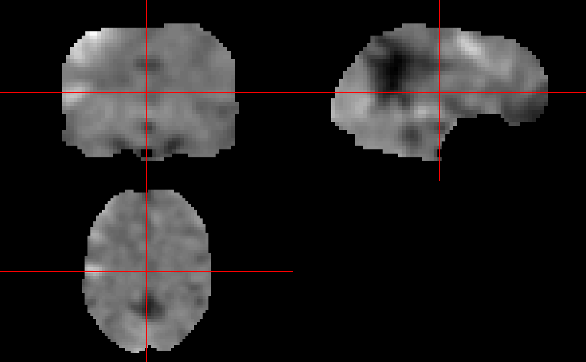
We can also look at the mean image over all voxels:
mask = array(TRUE, dim = dim(img))
mean_image = limmi:::remake_nifti_image(rowMeans(mat), img, mask = mask >0)
if (have_neurobase) {
neurobase::ortho2(mean_image, pdim = pdim)
}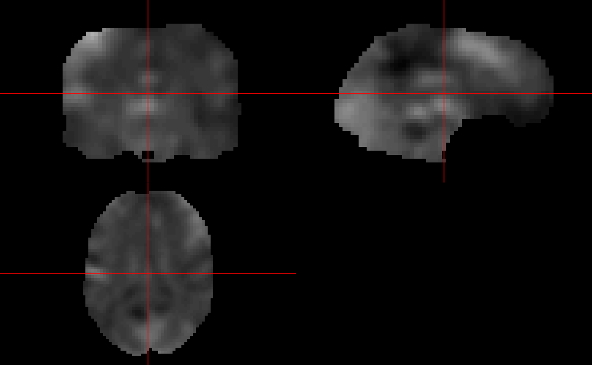
Now, we could run limma directly on this matrix. The
nifti_limma function does this as a wrapper for the
process. We should likely have a mask file of the voxels we want to
perform the operation, but otherwise it will work over all voxels, even
those with NaN in all the regions.
Let’s make a mask of voxels where there is any non-missing in the data:
keep = rowSums(!is.na(mat)) > 0
mask = array(keep, dim = dim(img))
mask = asNifti(mask, reference = img)
if (have_neurobase) {
neurobase::ortho2(mask, pdim = pdim)
}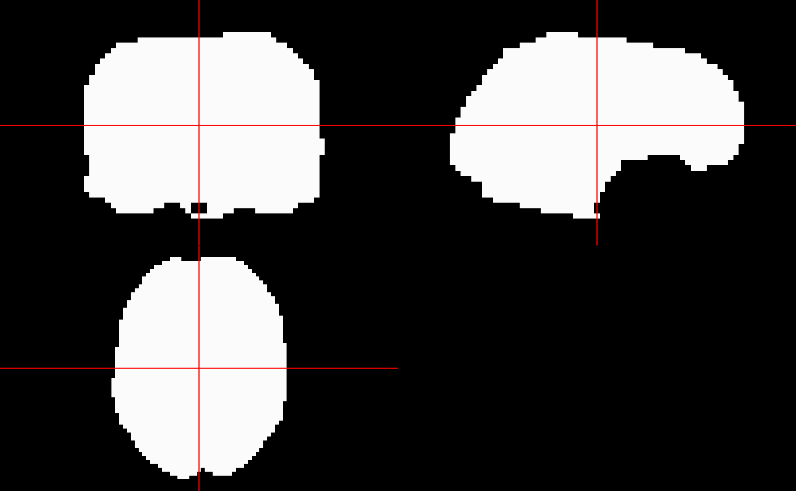
Run limma
Now that we have the mask we want, let’s run limma and a
linear fit:
fit = limma::lmFit(mat[keep, ])All in one line
We can use the nifti_lmFit function to perform this all
in one function:
check_fit = nifti_lmFit(imgs = files, mask = mask, verbose = FALSE)
all.equal(check_fit$coefficients, fit$coefficients)
#> [1] TRUERunning eBayes
Let’s run eBayes with the defaults (not likely a good
idea with this data), getting the results:
eb = limma::eBayes(fit = fit)
coef_vec = eb$coefficients[,1]
coef_image = limmi:::remake_nifti_image(coef_vec, img, mask = mask > 0)
if (have_neurobase) {
neurobase::double_ortho(mean_image, coef_image, pdim = pdim)
}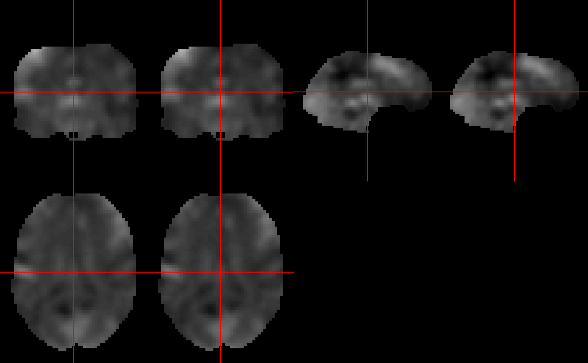
All in one line
The nifti_eBayes function will do the reading, fitting,
and eBayes:
check_eb = nifti_eBayes(files, mask, verbose = FALSE)
all.equal(check_eb$empirical_bayes$coefficients, eb$coefficients)
#> [1] TRUE
diff_from_mean = mean_image - coef_image
if (have_neurobase) {
neurobase::ortho2(diff_from_mean, pdim = pdim)
}
hist(diff_from_mean)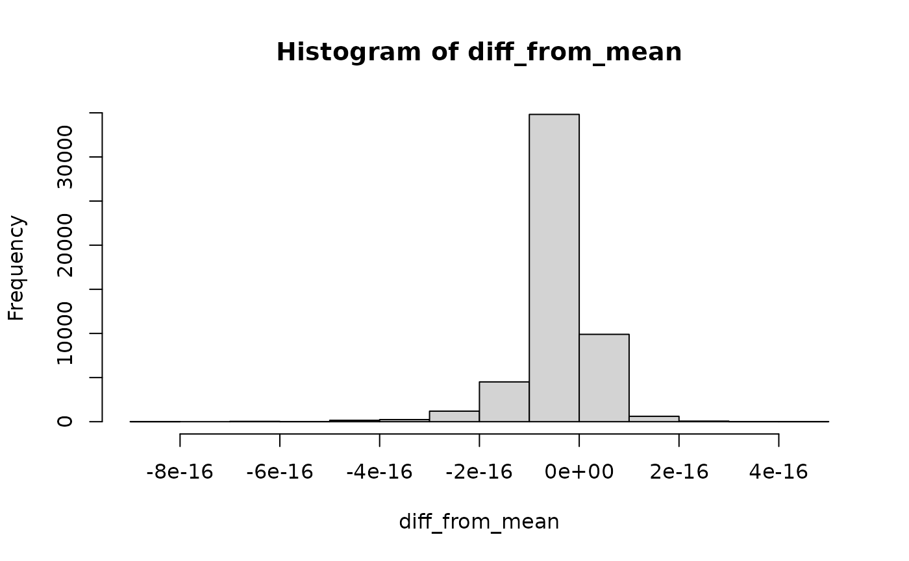
The output of nifti_eBayes does the remaking of images,
and the images element is a list of these output images
from eBayes:
if (have_neurobase) {
neurobase::ortho2(check_eb$images$p.value, pdim = pdim)
}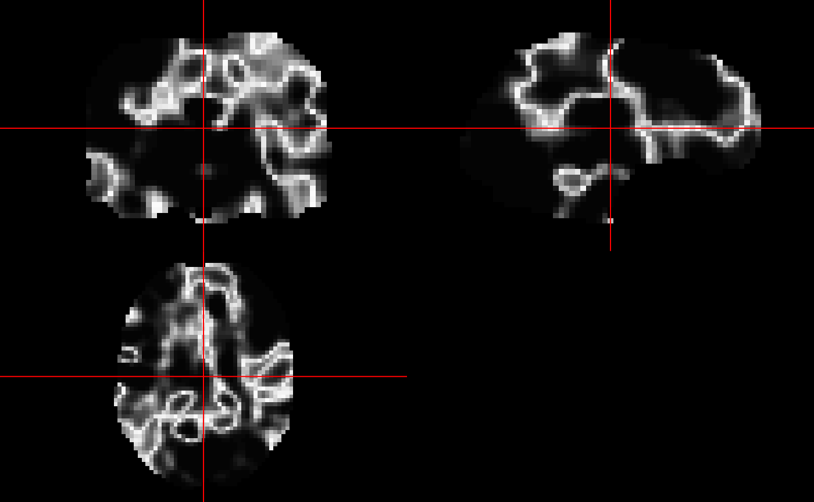
Meanwhile, nifti_eBayes computes the standard T
statistics and the associated p-value:
if (have_neurobase) {
neurobase::ortho2(check_eb$images$standard_t_stat_p_val, pdim = pdim)
}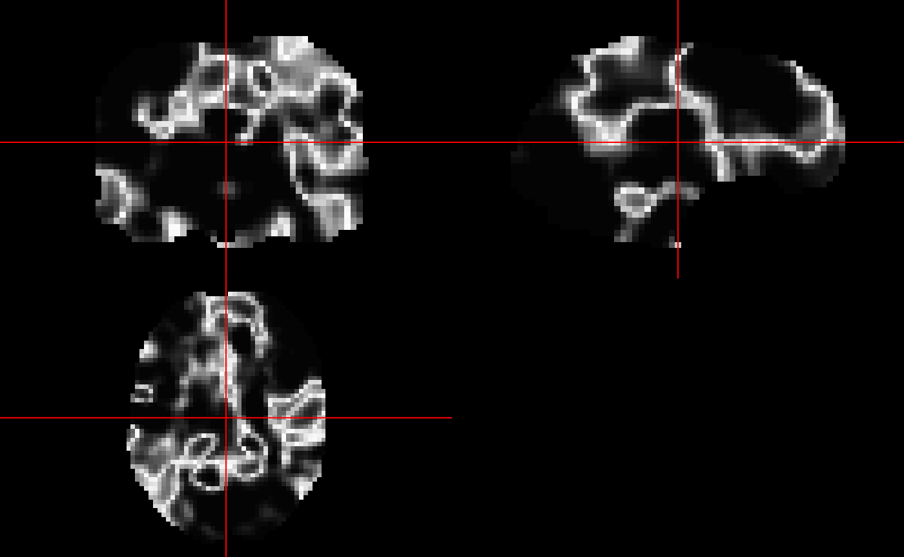
By default, nifti_eBayes also does a
topTable from limma to adjust the p-values,
using a Benjamini-Hochberg adjustment:
if (have_neurobase) {
neurobase::ortho2(check_eb$images$adjusted_p_value, pdim = pdim)
neurobase::ortho2(check_eb$images$adjusted_p_value <= 0.05, pdim = pdim)
}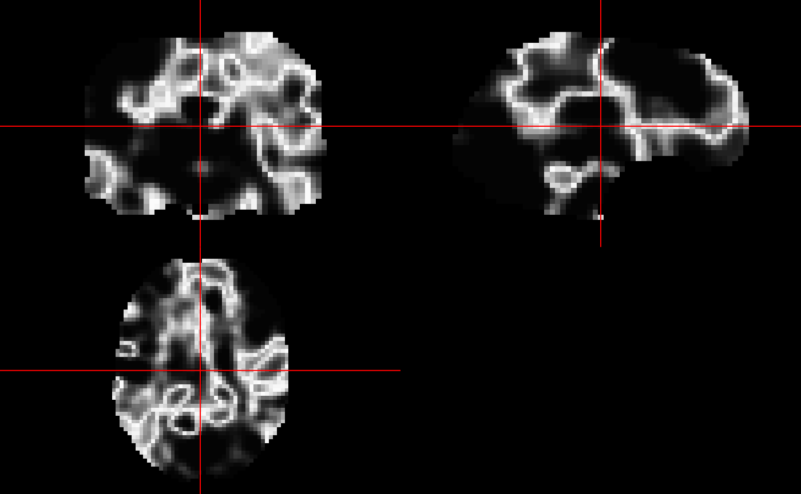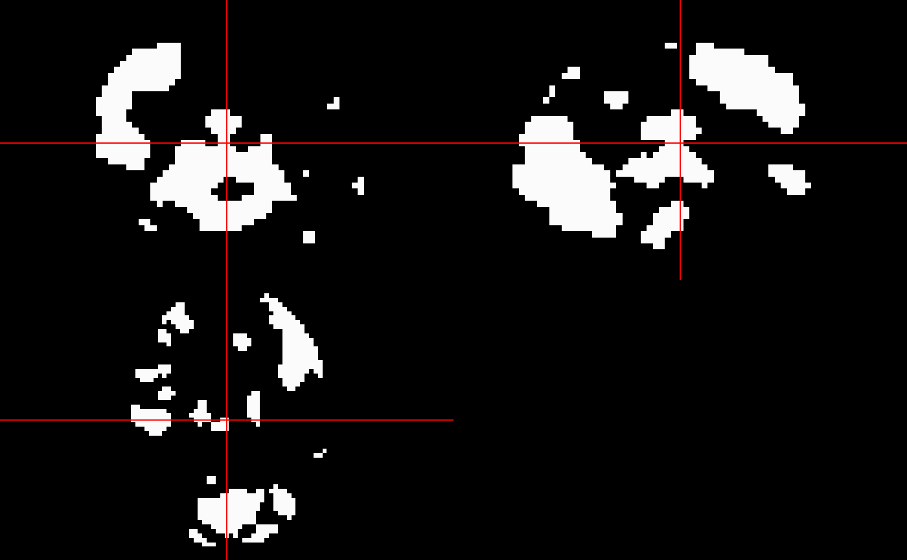
Here we can compare the two maps, before and after adjustment:
if (have_neurobase) {
neurobase::ortho2(check_eb$images$p.value <= 0.05, pdim = pdim)
neurobase::ortho2(check_eb$images$adjusted_p_value <= 0.05, pdim = pdim)
}
Running the locally moderated T statistics
Here we run findNearestNeighbors to list the neighbors
of each voxel. The function nifti_local_moderated_t_stat
produces moderated T statistics with respect to the local neighbors. The
computation can be parallelized by specifying the parameter
mc.cores.
# Specifying the radius of neighborhood
r = 2
findnn = findNearestNeighbors(maskImg = mask, radius = r, threads = 8)
localt = nifti_local_moderated_t_stat(imgs = files, mask = mask, nn = findnn, radius = r,
adjust.method = "BH", mc.cores = 1)
#> | | | 0% | |====== | 8% | |============ | 17% | |================== | 25% | |======================= | 33% | |============================= | 42% | |=================================== | 50% | |========================================= | 58% | |=============================================== | 67% | |==================================================== | 75% | |========================================================== | 83% | |================================================================ | 92% | |======================================================================| 100%Here we compare the locally moderated T-statistic(left) with the globally moderated T-statistic (right).
if (have_neurobase) {
neurobase::ortho2(localt$pvalmap <= 0.05, pdim = pdim)
neurobase::ortho2(check_eb$images$p.value <= 0.05, pdim = pdim)
}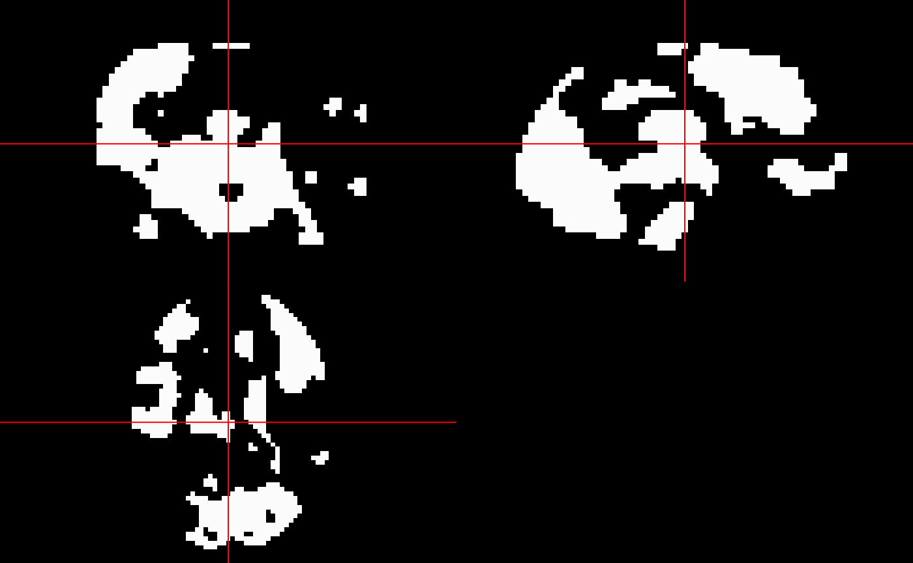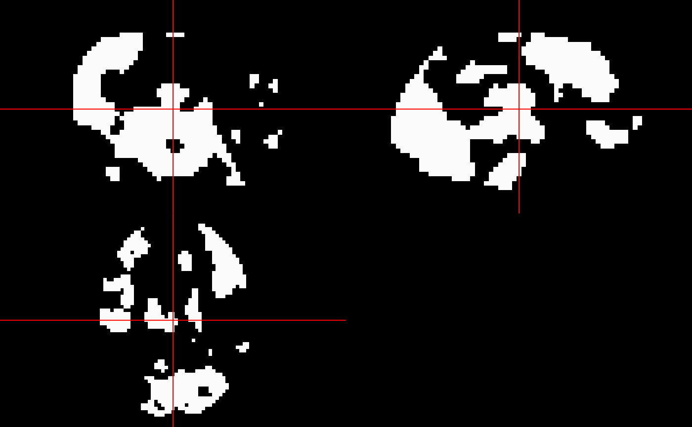